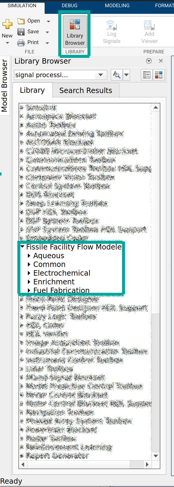
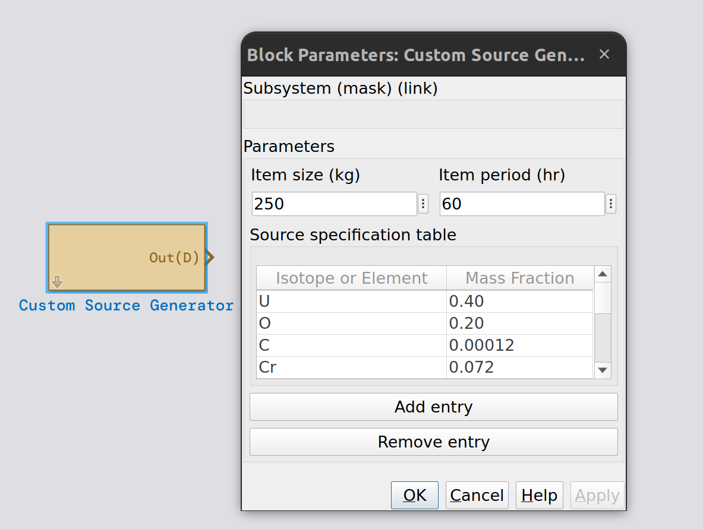
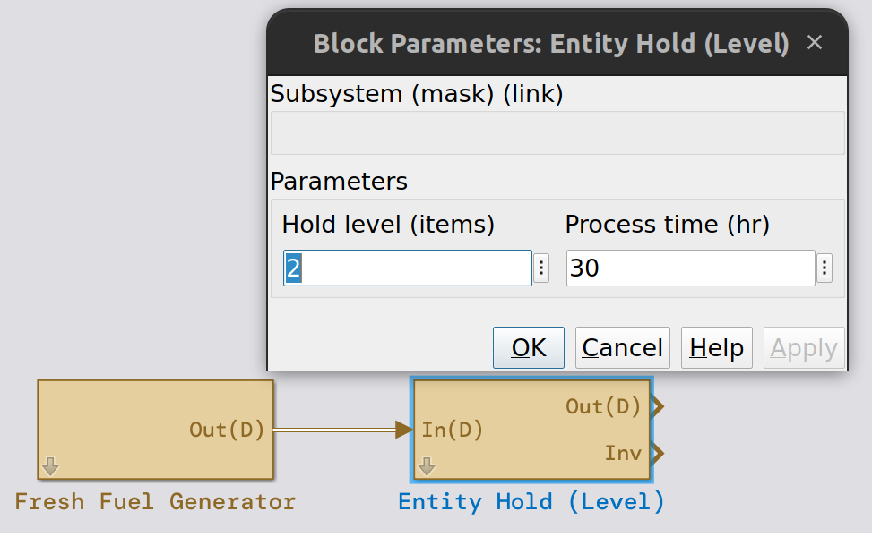

Getting Started#
This section will illustrate a simple example of how F3M can be used to simulate flows of material. Specifically, this section presents a step-by-step guide to simulate the decladding of a fresh fuel assembly.
Important
Ensure that the folder containing F3M is on your MATLAB path. This can be done by right clicking on the folder inside the MATLAB explorer, selecting add to path then all folders and subfolders. If F3M is properly installed, you will see F3M in the library browser when a Simulink model is open:
{kind=link}
Start by placing a custom source generator into a blank model. This block can be found in the F3M common library and is the source of material for this example. The custom source block has a few parameters:
Item Size (kg)This is the total size of the entity that leaves
Item period (hr)The frequency with which entities are creates
Mass Fraction table
The distribution of mass, defined by
Item Sizeacross the entity.These values should sum to 1, although there is no explicit check that occurs in F3M.
Make a few assumptions about the fuel assembly (note these values do not necessarily reflect a real assembly and are for illustrative purposes):
Facility operational time per year: 10 days
240 hours per year
Facility thoughput: 1 MT uranium
Fuel assembly total mass: 250kg
Assembly composition:
40% U
20% O
40% 304 Stainless Steel
0.03% C
18 % Cr
2 % Mn
8% Ni
0.10 % N
0.045 % P
0.75% Si
0.030 % S
71.045% Fe
Using the assumed information, the parameters for the custom source block are as follows:
Item Size: 250
Item Period: 60
Facility Throughput = \(\approx\) 4.2 kg/hr
250/(1000/240)
Mass Fractions:
U 0.40
O 0.20
0.00012 C
0.072 Cr
0.008 Mn
0.032 Ni
0.004 N
0.00018 P
0.003 Si
0.00012 S
0.28148 Fe
After placing the block and entering the information above, your model should have a single block, similar to this image:
{kind=link}
Next, assume there is a buffer storage area. Buffer areas are common in bulk facilities as they allow for variation in downstream processes. This can be simulated using an Entity Hold (Level) block. In this case, assume a hold level of 2 and a process time of 30. From the documentation on the entity process and hold block:
An optional process time is available which applies a time delay to an entity after it leaves the queue. This parameter can control how quickly entities are able to leave after the level set point has been reached.
The process time is set to 30, the same as the fresh fuel generator periodicity, to maintain the level of fuel in the buffer. Otherwise, the entire inventory of fuel would leave the buffer once the level was reached.
Connect the fresh fuel generator to the newly created hold block by dragging the outport of the generator to the inport of the buffer area as shown below:
{kind=link}
Note
Blocks can be renamed by double clicking the text area below the block. In the figure above, we have added the label Fresh Fuel Generator.
The cladding removal process can now be added and connected to the buffer block. This can be accomplished by using an Entity Process and Hold Block. This block provides parameters for processing time and fractions of material going to the Rmvd (D) stream. Specifically, this block will process entities and create both for the entity with the removed material and a separate entity representing removed material.
Assume that 99% of the cladding material is removed in this process. Specifying this operations can be done in one of two ways. The first would be to manually list all of the elements in 304 stainless steel (the assumed cladding material) and set all of their reduction multipliers to 0.99, which indicated 99% of the material is removed. The second way to specify this operation is to note that the reduction multipliers are processed in sequence, from first to last, as specified in the block documentation. Later entries overwrite earlier entries. So in the second method of specification, we can define all materials, using keyword all, to be removed at 99% and then overwrite the entries for U and O to be 0%. This way, many fewer entries need to be entered into the reduction multiplier table.
The figure below shows the connected process and hold block with the specified reduction multipliers. Specifying all and then overwriting the reduction multipliers for specific elements or isotopes can be an effective way to represent a process while reducing the number of entries in the table. This can also be done for elements; specifying an element then a specific isotope can be an easier way to specify process separations in some cases.
{kind=link}
Next, configure the simulation properties; under the modeling ribbon, select model settings:
Solver: ode45
Max step size: 1
Constraining the max step size leads to more reasonable simulation results, although feel free to try different values or leave it on auto.
Finally, the blocks need to be connected to data logging capabilities. Ensure the model is working as expected by connecting Entity Species Selectors to the Res(D) and Rmvd(D) ports of cladding removal. Enter Fe for both elements. Next, connect signal species selectors with element U selected in the dialog to the inventories of the fresh fuel buffer and cladding removal. Attach a sum of elements followed by a scope to the Slct(C) port for all the species selector blocks. The completed model should look like the figure below.
Note
Selector blocks output all isotopes when an element is selected. The sum of elements block sums across all isotopes to result in a single value for elemental mass.
{kind=link}
Simulate the model with a stop time of 240, which corresponds to our operational year. Review the scopes to verify that the majority of the cladding materials are going into the Rmvd(D) stream. Also review the inventories to check the behavior of the buffer and cladding removal step. The buffer should grow to a level of two and periodically output material. Cladding removal should be mostly empty as the processing time is much shorter than the frequency of material input.
Note
The throughput for the first 240 hours will be less than the specified 1 MT U as some material is used to fill the fresh fuel buffer.